items = ("Start Depth","Change bits to 90 Degrees", "Change bits to 60 Degrees", "Save all toolpaths") task = select("Select what task you want to perform", options = items) if task == items[0]: sDepth = input("Input a start depth:") # Function to click each toolpath and modify it def modifyToolpaths(top): if not exists(Pattern().similar(0.97).targetOffset(23,-1)): return for x in findAll(Pattern().similar(0.97).targetOffset(23,-1)): doubleClick(x) if task == items[0]: click(Pattern(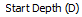).targetOffset(75,-2)) type("a",KEY_CTRL) type(sDepth) elif task == items[1]: click(Pattern(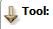).targetOffset(99,17)) click(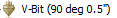) click(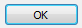) elif task == items[2]: click(Pattern().targetOffset(99,17)) click(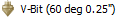) click() click(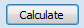) if(exists(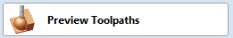)): click(Pattern().similar(0.71)) if top: click(Pattern(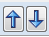).targetOffset(17,39)) else: click(Pattern().targetOffset(6,-32)) hover(x) mouseMove(-33,-3) mouseDown(Button.LEFT) mouseUp(Button.LEFT) if(exists(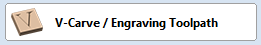)): click(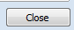) if(exists()): click(Pattern().similar(0.71)) if(exists(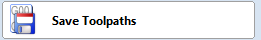)): click() # Go to the top click(Pattern().targetOffset(17,39)) if task != items[3]: modifyToolpaths(True) # Go to the bottom click(Pattern().targetOffset(6,-32)) modifyToolpaths(False) elif task == items[3]: click(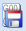) hover(Pattern().targetOffset(17,39)) mouseDown(Button.LEFT) sleep(2) mouseUp(Button.LEFT) if exists(Pattern(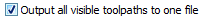).exact()): click(Pattern(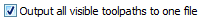).targetOffset(-93,-2)) first=True loop=True while(loop): if exists(Pattern().similar(0.97).targetOffset(23,-1)): for x in findAll(Pattern().similar(0.97).targetOffset(23,-1)): click(x) click() if first: popup("Please select the folder you'd like these to save to...then click ok") first=False click(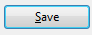) if exists(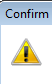): click(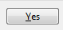) # Uncheck the check box hover(x) mouseMove(-33,-3) mouseDown(Button.LEFT) mouseUp(Button.LEFT) if exists(Pattern(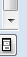).exact()): loop=False break # Click 7 times and look for more click(Pattern(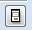).targetOffset(5,-25)) click(Pattern().targetOffset(5,-25)) click(Pattern().targetOffset(5,-25)) click(Pattern().targetOffset(5,-25)) click(Pattern().targetOffset(5,-25)) click(Pattern().targetOffset(5,-25))